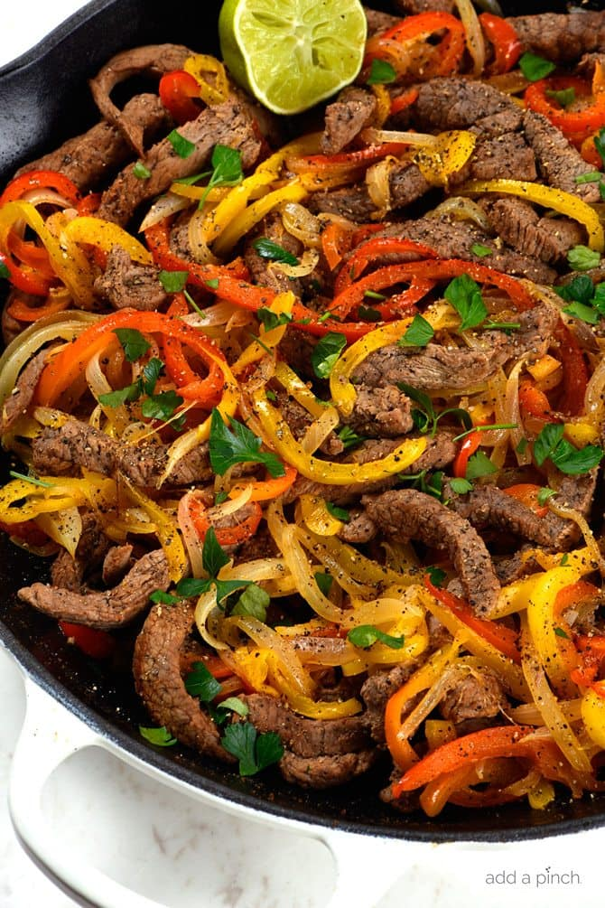

Steak Fajitas

Simple & Fresh Skillet Recipe
Steak fajitas make a quick and easy meal perfect for weeknight suppers
or weekend celebrations! Made with beef, peppers, onions and served with a stack of
warm tortillas and condiments. They are always a favorite!
Ingredients
- 2 pounds skirt, flank, sirloin, or hanger steak (sliced into 1/2 inch strips)
- 1 red pepper (deseeded and sliced into thin strips)
- 1 green or yellow pepper (deseeded and sliced into thin strips)
- 1 medium onion (peeled and sliced into thin strips)
- 3 tablespoons olive oil
- 1 tablespoon lime juice
- 1/2 teaspoon chili powder
- 1 teaspoon ground cumin
- pinch cayenne pepper
- 1/2 teaspoon Kosher salt
- 1/2 teaspoon fresh ground black pepper
- 2 cloves garlic (minced)
- 6-8 tortillas (warmed)
- sour cream
- Guacamole
- Salsa
Directions
Place the steak into a sealable bag. Place the peppers and onion into a separate sealable bag.
Add the olive oil, lime juice, chili powder, ground cumin, cayenne pepper, salt, black pepper,
and garlic to a jar with a screw top or tight fitting lid. Shake until well combined.
Pour ⅓ of the marinade over steak, ⅓ of marinade over vegetables and reserve the remaining marinade in
the jar for using when cooking the steak fajitas.
Seal the bags tightly and refrigerate for one hour to overnight.
When ready to cook, heat a large skillet over medium-high heat. Pour the vegetables into the skillet and cook
until just tender crisp, about 5 minutes.
Remove the vegetables from the skillet to a plate and add steak strips to the same skillet. When the steak is cooked
throughout (about 7-10 minutes), add vegetables back to the skillet along with the reserved marinade.
Serve with warm tortillas and desired optional garnishes.
Return To Homepage
|
Return To Top